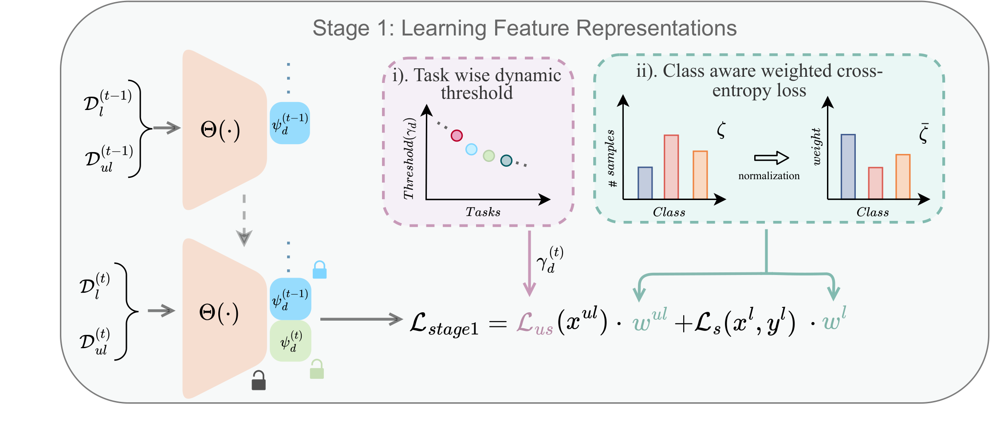
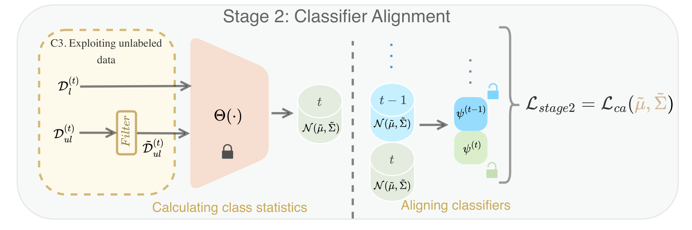

TACLE: Task and Class-aware Exemplar-freeSemi-supervised Class Incremental Learning
Indian Institute of Science, Bangalore, India.
WACV 2025
We propose a novel TACLE (TAsk and CLass-awarE) framework to address the relatively unexplored and challenging problem of exemplar-free semi-supervised class incremental learning. In this scenario, at each new task, the model has to learn new classes from both (few) labeled and unlabeled data without access to exemplars from previous classes. In addition to leveraging the capabilities of pre-trained models, TACLE proposes a novel task-adaptive threshold, thereby maximizing the utilization of the available unlabeled data as incremental learning progresses. Additionally, to enhance the performance of the under-represented classes within each task, we propose a class-aware weighted cross-entropy loss. We also exploit the unlabeled data for classifier alignment, which further enhances the model performance. Extensive experiments on benchmark datasets, namely CIFAR10, CIFAR100, and ImageNet-Subset100 demonstrate the effectiveness of the proposed TACLE framework. We further showcase its effectiveness when the unlabeled data is imbalanced and also for the extreme case of one labeled example per class.
Difference between Class Incremental Learning (CIL), Semi-Supervised CIL (SS-CIL), and Exemplar-Free Semi-Supervised CIL (EFSS-CIL) settings.
Two stages of training are used in TACLE. In the first stage, the model is trained on both the labeled data and high-confidence unlabeled data (selected using task-adaptive thresholding) of the current task using a class-aware weighted cross-entropy loss. In the second stage, the model is fine-tuned on the unlabeled data of the current task using a task-adaptive thresholding strategy.
Stage 1: Training on labeled and high-confidence unlabeled data using class-aware weighted cross-entropy loss
Stage 2: Fine-tuning on unlabeled data using task-adaptive thresholding
@article{kalla2024tacle,
title={TACLE: Task and Class-aware Exemplar-free Semi-supervised Class Incremental Learning},
author={Kalla, Jayateja and Kumar, Rohit and Biswas, Soma},
journal={arXiv preprint arXiv:2407.08041},
year={2024}
}